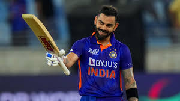
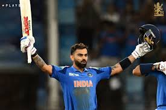
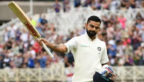
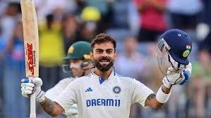
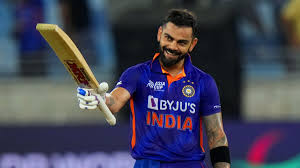
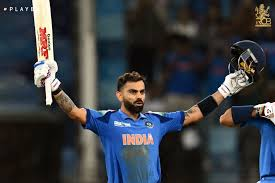
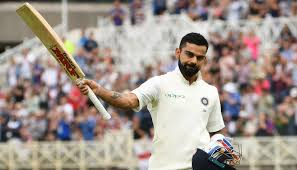
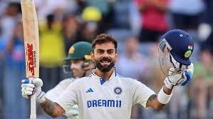

About Virat Kohli
Born on November 5, 1988, in Delhi, India, Virat Kohli is a cricketing icon renowned for his aggressive
batting and exceptional consistency. A right-handed batsman and former captain of the Indian national
team, Kohli has redefined modern cricket with his passion, fitness, and leadership. He plays for Royal
Challengers Bengaluru in the IPL and Delhi in domestic cricket.
"To become a great player, you need an attitude like Virat Kohli’s." – Sunil Gavaskar
Cricketing Career
Kohli's journey began at the West Delhi Cricket Academy at age nine. He led India to victory in the 2008
ICC Under-19 World Cup and made his ODI debut against Sri Lanka in 2008. Known as the "Chase Master," he
holds the record for the most ODI centuries (50) and is the highest run-scorer in IPL history. Kohli
captained India to 40 Test wins, including a historic series win in Australia in 2018-19.
Achievements
- ICC ODI Player of the Year: 2012, 2017, 2018, 2023
- Sir Garfield Sobers Trophy (ICC Cricketer of the Year): 2017, 2018
- Fastest to 10,000 ODI runs (205 innings)
- Most runs in T20 Internationals: 4,188 runs
- Arjuna Award (2013), Padma Shri (2017), Rajiv Gandhi Khel Ratna (2018)
- Led India to 2011 Cricket World Cup and 2013 ICC Champions Trophy victories
"I always dreamt of holding the bat and winning games for India." – Virat Kohli


 






